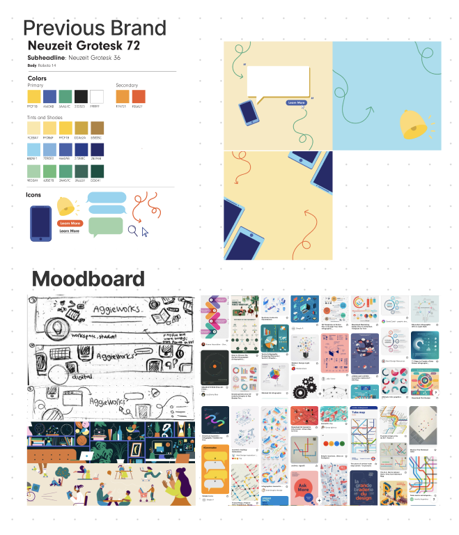
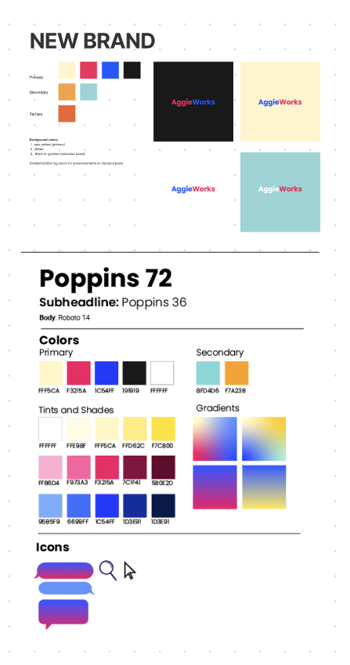

03
Working at Aggieworks, I’ve gained some experience in designing a brand to market it as a professional company. Since onboarding, I’ve learned how to completely rebrand a social page like instagram, and the above images show our old branding look, which seemed very plain and mediocre. We wanted our new look to be unique, professional, but playful and bright with colors, which transitioned to our new dark theme Aggieworks.